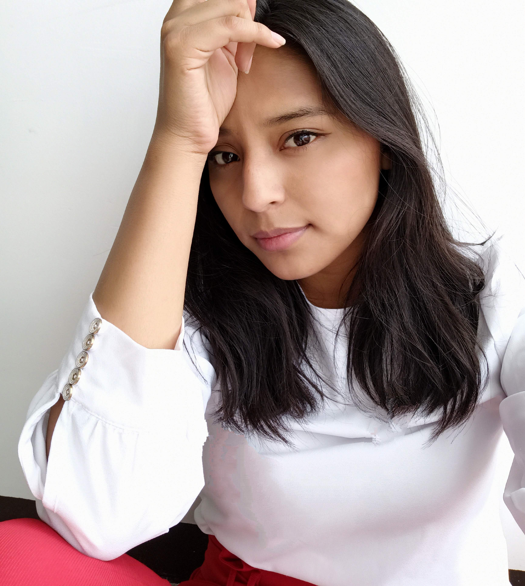

Gloria Solar García
 Gloria Navidad Solar García soy estudiante de diseño gráfico en la facultad de arquitectura en la Benemérita Universidad Autónoma de Puebla (Buap), tengo 23 años, soy de la ciudad de Puebla, actualmente estoy trabajando con una agencia de viajes en Puebla, me gustan los animales, las redes sociales, comer, hacer ejercicio, la moda, algunos de mis hobbies son ilustrar y hacer corte y confección de algunas prendas, entre otros, en un futuro cercano quiero ya tener un negocio y tal vez en un futuro no tan lejano un departamento propio, con estabilidad económica, emocional y psicológica.